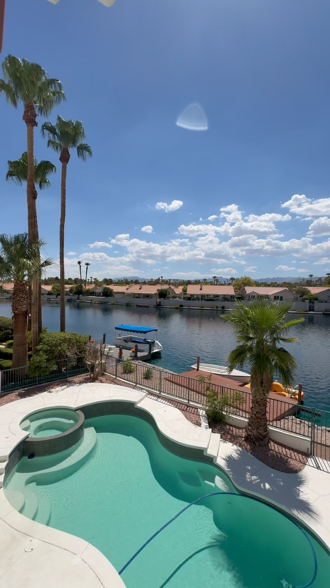
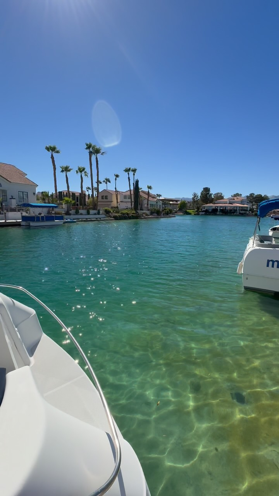
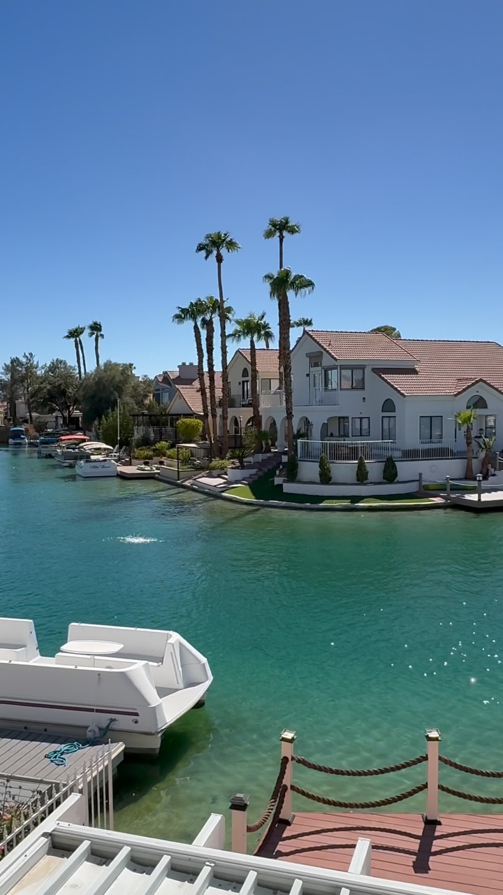

Neighborhood Guide · Northwest & West Las Vegas · Updated September 2026
Yes, there are lake houses in Las Vegas — with docks, paddle boats and water out the back door. Two neighborhoods have them: Desert Shores in the northwest and The Lakes on the west side. Here is how they compare and what they cost.
Talk to me about Desert ShoresMost people who move here have no idea these exist. Desert Shores, in northwest Las Vegas (89128) next to Summerlin, and The Lakes, on the west side off Sahara Avenue (89117), were both built around man-made lakes in the 1980s and 1990s. Homes on the water have their own docks, back patios that step down to the lake, and views you would expect in Southern California, not twenty minutes from the Strip.
Not every home in either neighborhood is on the water. That is the most important thing to understand when you shop here: a waterfront lot and a home two streets back can share a zip code and an HOA and still be priced like different neighborhoods. I tell you which is which before you ever drive over.
Homes I have walked in both neighborhoods — and dinner on the water at Americana, right on the Desert Shores lake.

Desert Shores · lakefront Desert Shores · corner lot
The Lakes · on the water
The Lakes · balcony Americana · on the lakeDesert Shores (89128). A master-planned community in northwest Las Vegas, near Lake Mead Boulevard and Buffalo Drive, with several lakes and gated pockets on the water. Homes are mostly 1990s one- and two-story, and the neighborhood has its own lakeside restaurants — Americana sits right on the water. Close to Summerlin shopping and the 95.
The Lakes (89117). On the west side between Sahara and Desert Inn, built around Lake Sahara. It runs from modest homes a few streets back to some of the largest custom estates in the valley on the water, and it sits minutes from Summerlin, Spring Valley and the 215.
On September 28, 2026, the MLS showed about 21 single-family homes for sale in the Desert Shores subdivisions, from $420,000 up to the high $800,000s — 12 between $400,000 and $600,000 and 9 between $600,000 and $1 million. In The Lakes subdivisions of 89117 there were about 25, starting at $399,999 — 15 between $400,000 and $600,000, 7 between $600,000 and $1 million, and 2 over $1 million, including one lakefront estate listed at $28 million.
Those counts include homes that are not on the water. True waterfront homes are a small share of each list and carry the premium — I pull the waterfront ones for you by name.
Counts from the MLS by subdivision name, pulled September 28, 2026; single-family only, auctions and bank-owned excluded. They move every week.
Yes. Desert Shores in northwest Las Vegas (89128) and The Lakes on the west side (89117) were built around man-made lakes, and homes on the water often have private docks. Lake Las Vegas in Henderson is a third, resort-style option.
On September 28, 2026 the Desert Shores subdivisions had about 21 homes for sale from $420,000 into the high $800,000s, and The Lakes subdivisions had about 25 from $399,999 up to a $28 million estate. Homes directly on the water sit at the top of each neighborhood's range.
Desert Shores is a 1990s master plan in the northwest near Summerlin with several lakes and lakeside restaurants. The Lakes is on the west side between Sahara and Desert Inn around Lake Sahara, and it ranges from modest homes to large custom estates on the water.
Many waterfront homes have docks, and paddle boats, kayaks and small sailboats are common. The exact boating rules are set by each HOA, so I pull the documents for any home you are serious about.